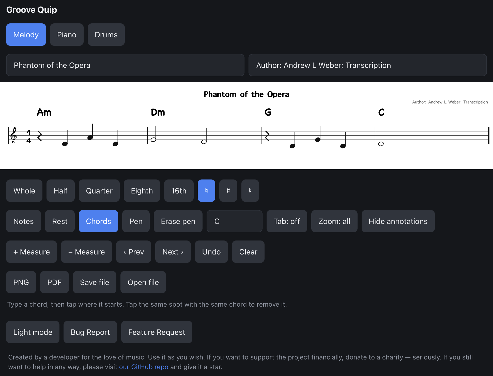
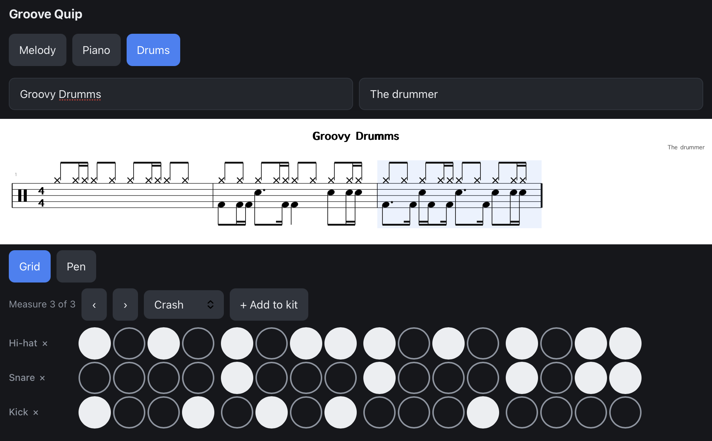
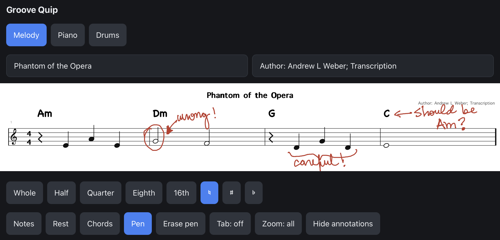

A music notation sketchpad
GROOVE QUIP
Groove Quip is a lightweight score editor for getting musical ideas onto the page, from a melody line to a full drum groove.

Start with the score
Capture a musical idea as it arrives.
Tap notes onto a treble staff, choose their length, and add chord symbols above the measure. Keep the page focused on the music instead of a complicated toolset.
Build a groove
Shape the rhythm one step at a time.
Work on one measure at a time with an instrument grid. Add the parts you need, tap in the pattern, and read the notation update above it.


Think on the page
Add a handwritten thought, right where it belongs.
Use the pen to circle a note, sketch a reminder, or leave a question for later. Annotations stay attached to their measure as the score changes shape.
Ready when the next idea is.
Open Groove Quip